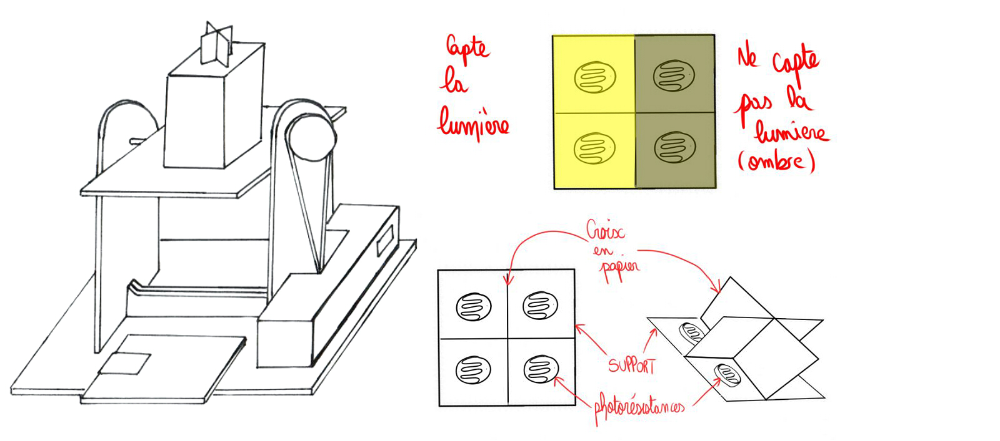
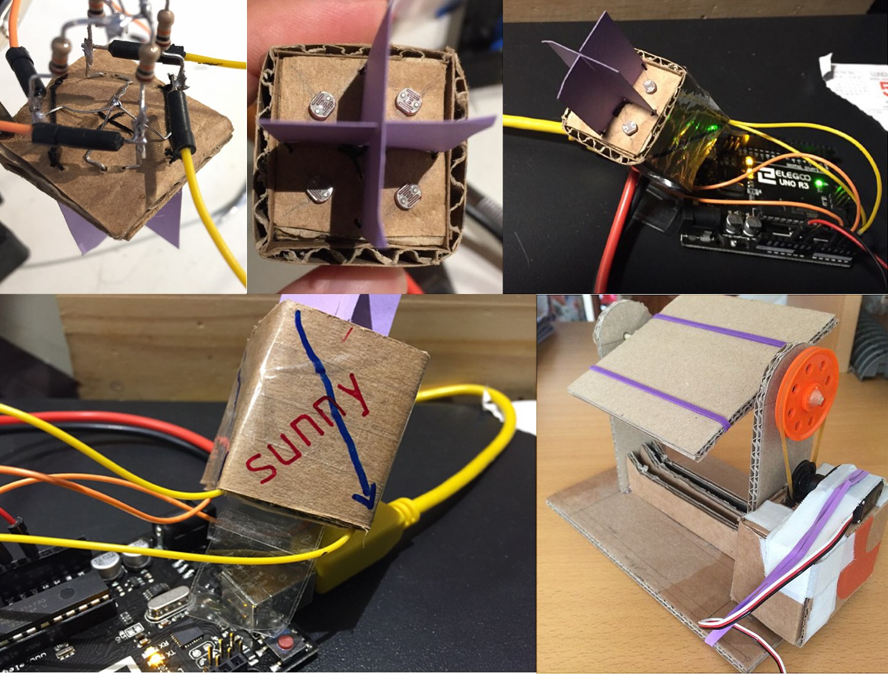
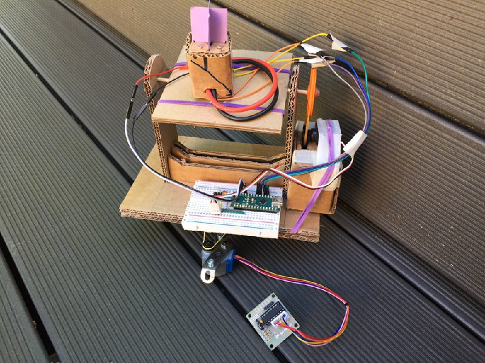

Présentation
Expérience
Galerie
Synthèse
Galerie
Pour réaliser ce projet, nous avons fait plusieurs dessins pour illustrer nos propros.
Evolution du Tracker Solaire
Galerie des images du site
Croquis du tracker solaire

Avancée du tracker solaire (modèle réel)

Modèle final (unidirectionnel)
